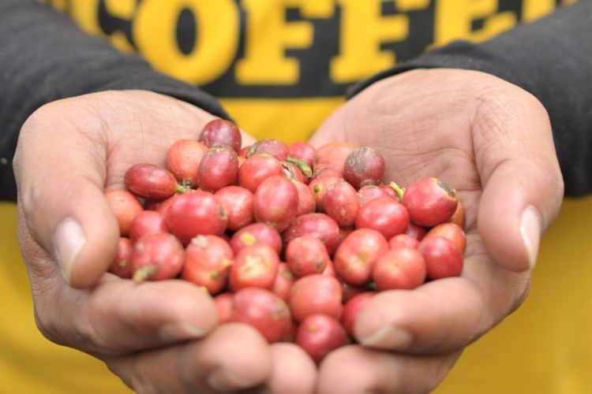
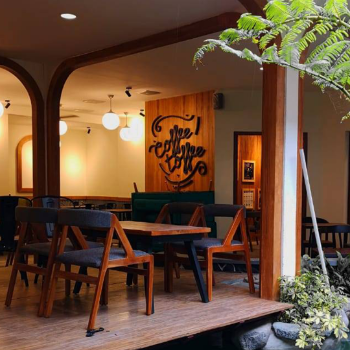
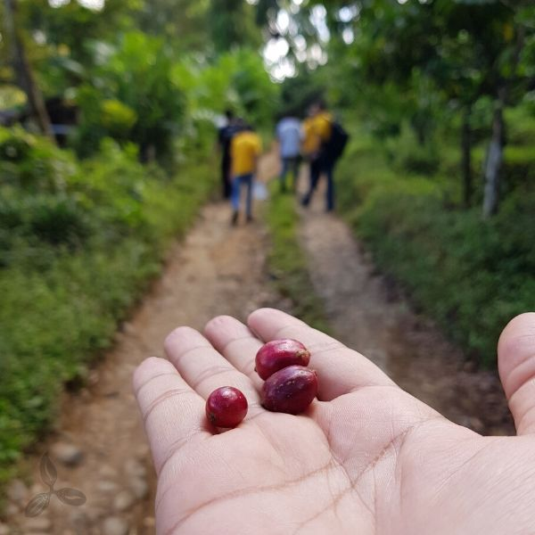
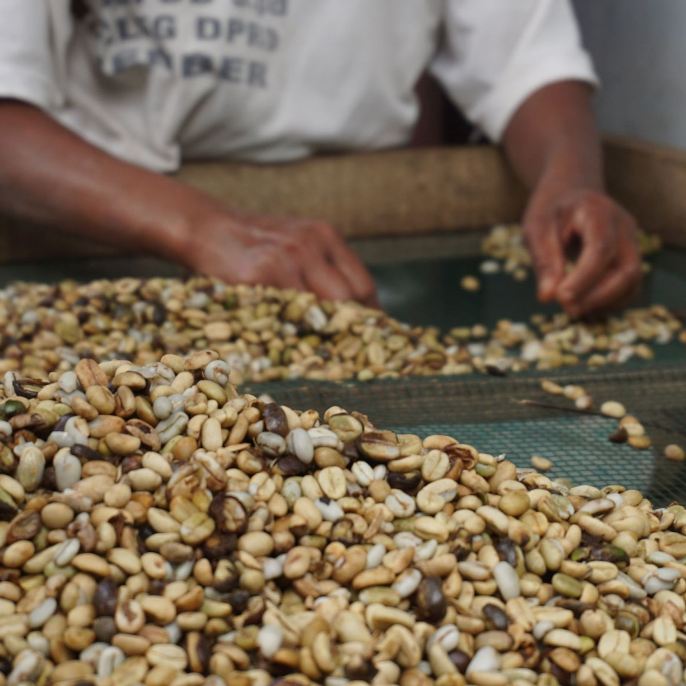
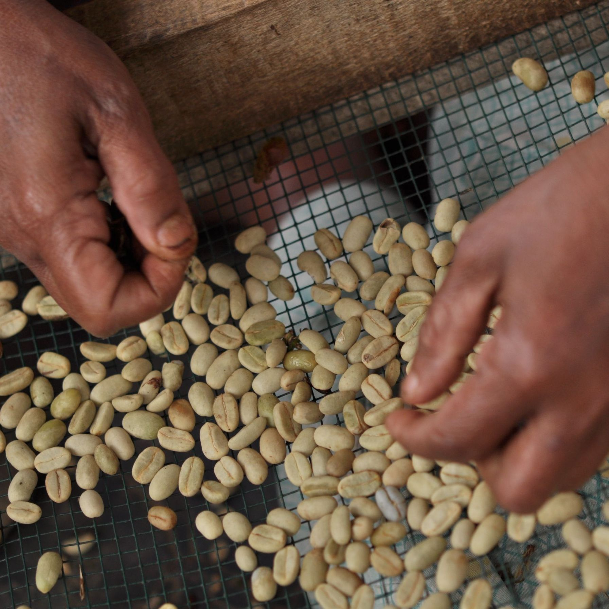
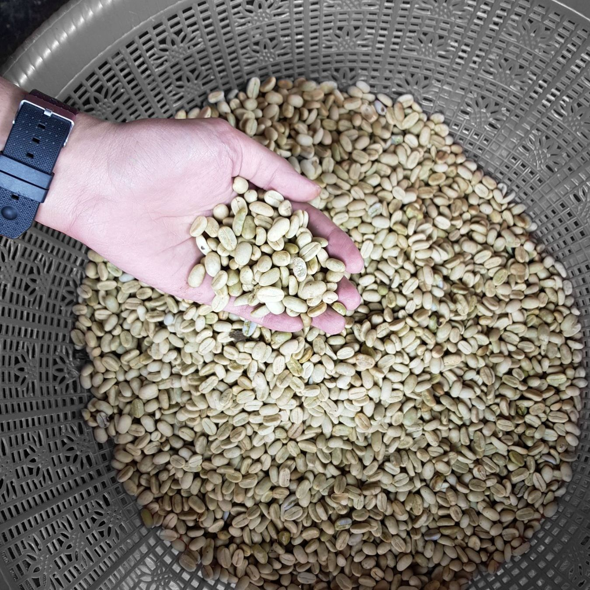
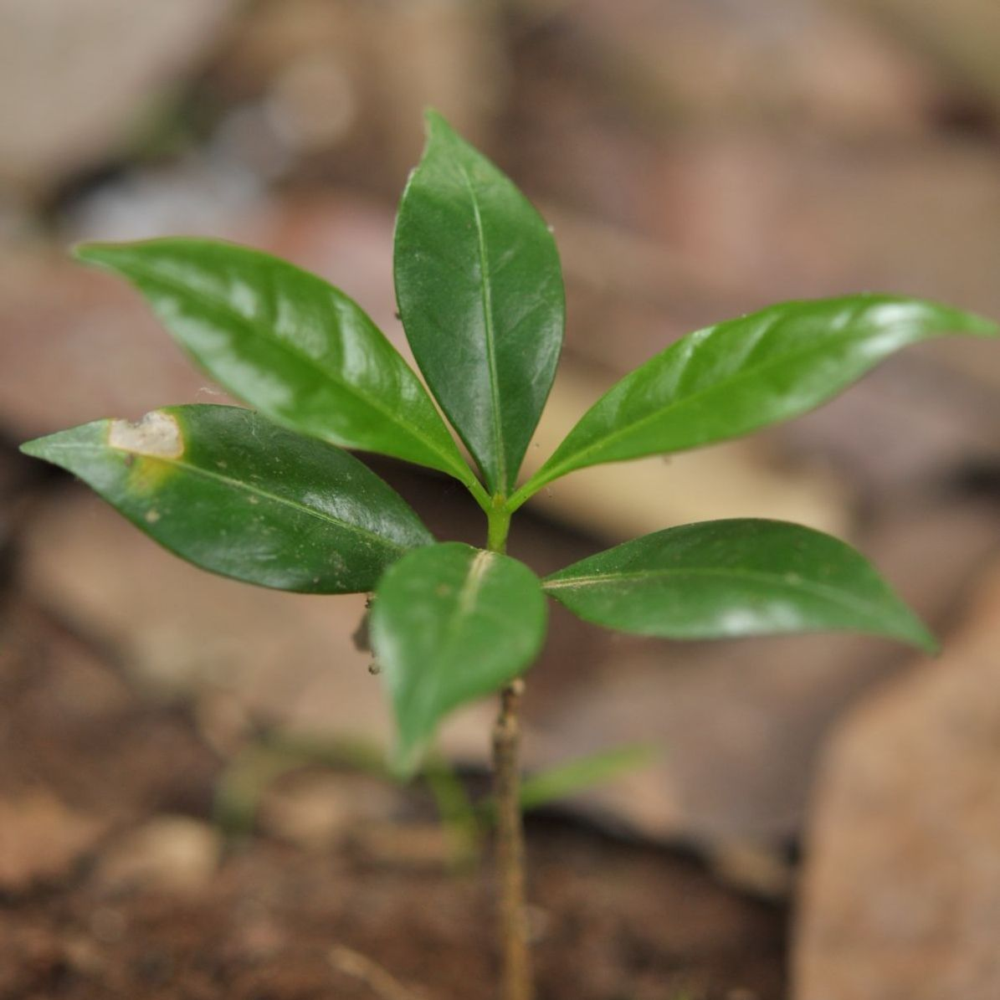
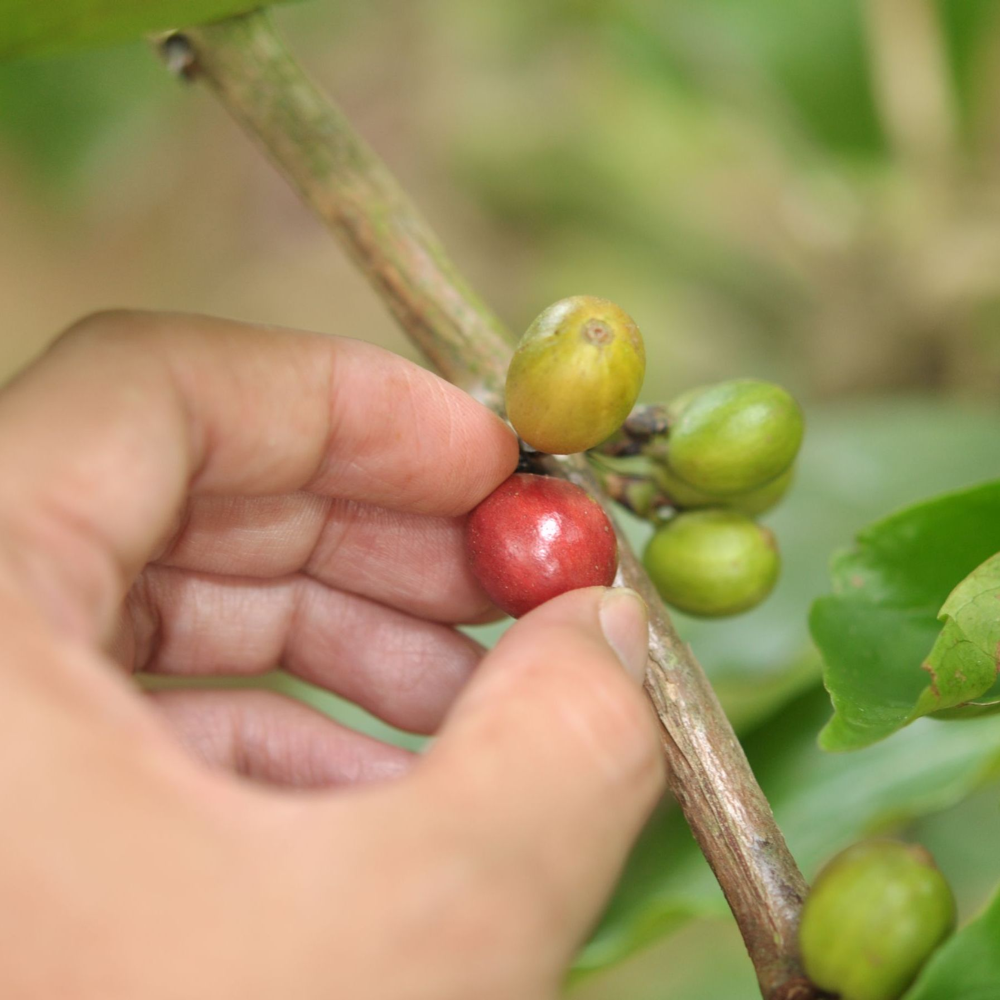

Pernyataan Perusahaan
Kami percaya bahwa setiap cangkir kopi adalah bentuk kontribusi kecil untuk dunia yang lebih baik. Komitmen kami adalah mendukung petani lokal dan menjaga keberlanjutan lingkungan melalui setiap langkah bisnis kami.
Kampanye ini mengenai kopi terbaik Indonesia. Kampanye ini mengenai bagaimana memberikan harga yang adil kepada petani kopi Indonesia serta pelanggan dimanapun berada. Kampanye ini mengenai membuka mata terhadap potensi di sekeliling kita serta tentang bagaimana berkarya terbaik.
Kampanye ini adalah mengenai IDEALISME. Kampanye ini juga mengenai NASIONALISME. Kampanye ini hakekatnya adalah sebuah ajakan untuk memberikan kebanggaan terhadap kopi Indonesia.

Kami percaya bahwa setiap cangkir kopi adalah bentuk kontribusi kecil untuk dunia yang lebih baik. Komitmen kami adalah mendukung petani lokal dan menjaga keberlanjutan lingkungan melalui setiap langkah bisnis kami.

Indonesia merupakan salah satu produsen kopi terbesar di dunia dengan lebih dari 15 jenis kopi lokal unggulan. Setiap daerah memiliki cita rasa yang unik dan khas, menjadikan kopi Indonesia istimewa di mata dunia.
Ironinya, konsumsi kopi lokal di dalam negeri masih kalah dengan kopi impor. Hal ini mendorong kami untuk terus mengkampanyekan gerakan minum kopi Indonesia.
TIME TO ACT
Negara kita memiliki fakta - fakta yang menakjubkan mengenai dunia kopi AKAN TETAPI negara kita juga memiliki fakta - fakta "kurang menyenangkan" yang mengikutinya. Kami adalah sekumpulan pemuda - pemudi dengan hasrat dan talenta yang mempunyai keyakinan bahwa kita mampu melakukan sebuah perubahan terhadap suatu kondisi yang salah. Paling tidak kami akan berusaha untuk selalu memberikan kebanggaan sebagai suatu bangsa, kebanggaan terhadap kemampuan diri untuk berkarya, dan kebanggaan terhadap KOPI INDONESIA.
Sekarang adalah waktunya untuk bergerak.. kami tidak akan bisa sendirian dalam gerakan ini. Ini adalah ajakan bagi kamu semua untuk membuat sebuah perubahan yang lebih baik utk kebanggaan dan kopi Indonesia.

Kami bekerja sama dengan petani lokal untuk meningkatkan kualitas dan hasil panen kopi Indonesia.

Kami mengadakan program edukasi kopi di berbagai daerah untuk mengenalkan nilai kopi lokal.

Kami mendukung berbagai acara dan festival kopi sebagai wujud cinta pada kopi Indonesia.





